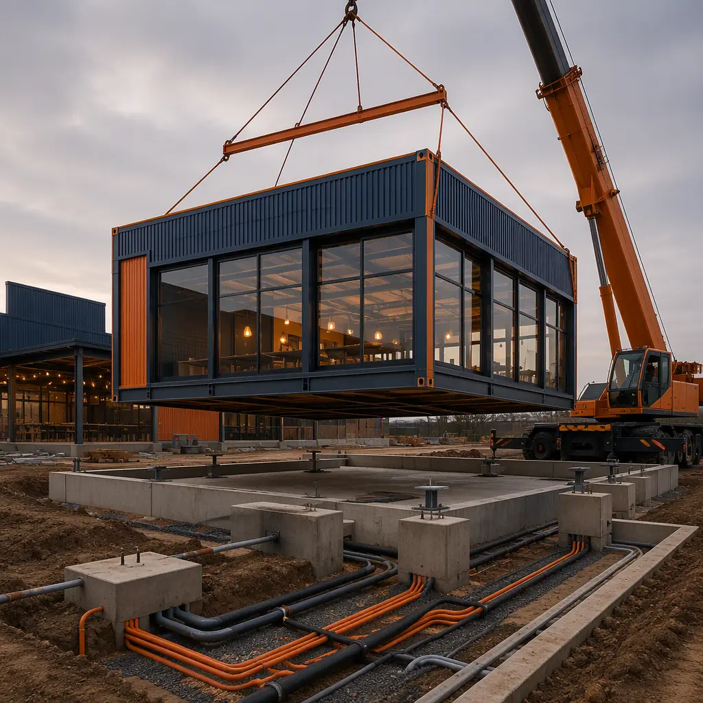
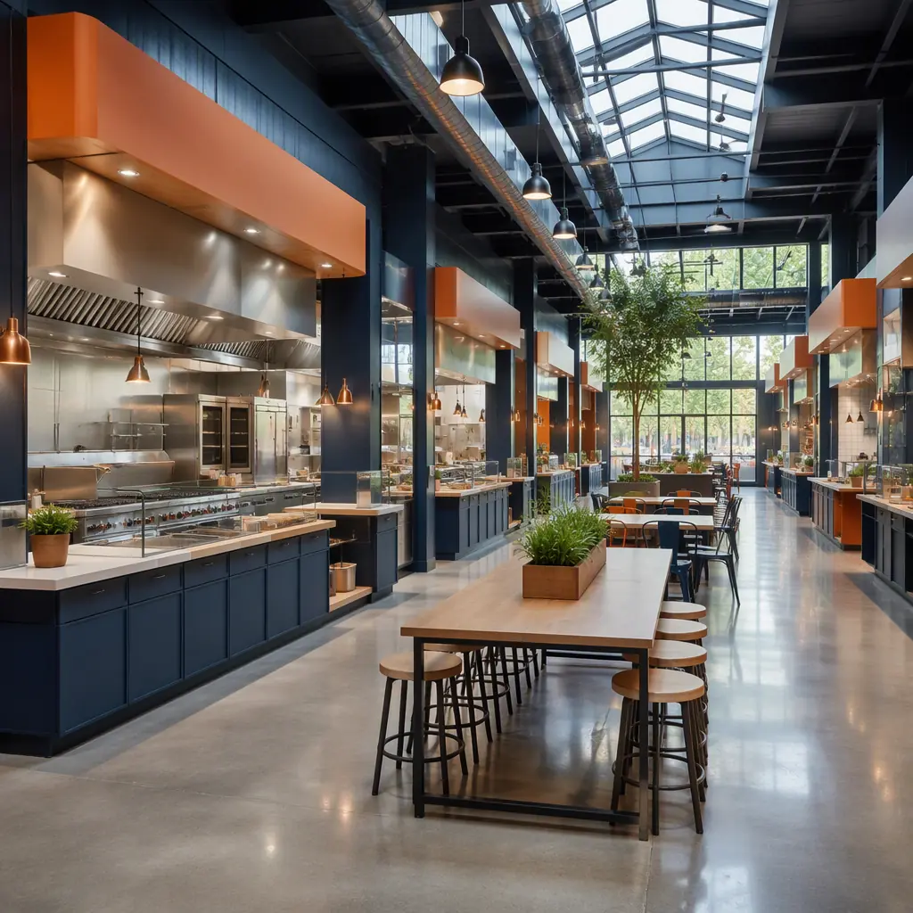
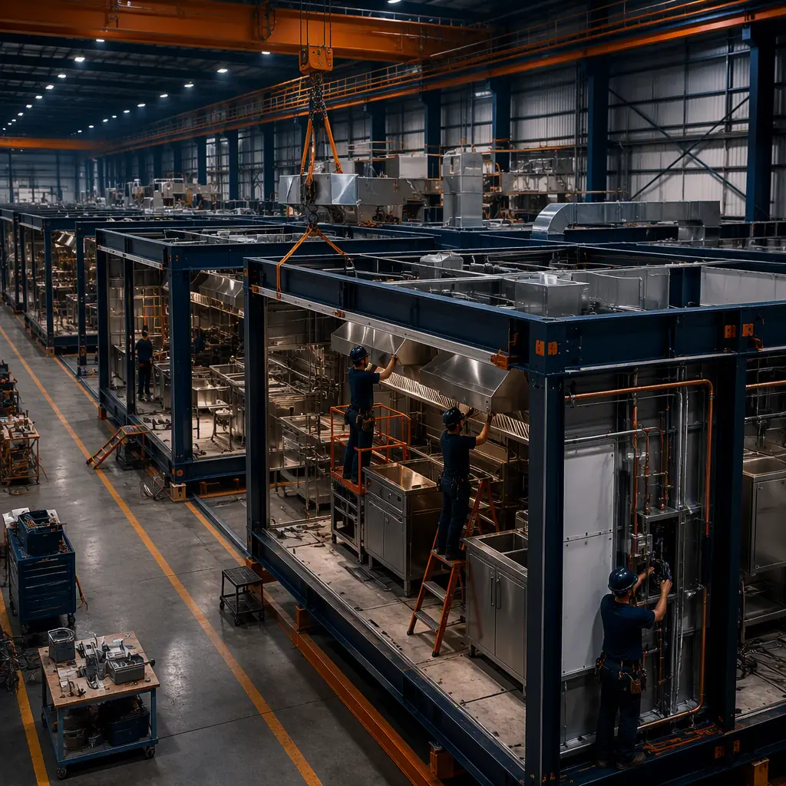

A food hall is a commercial building with a split personality: it has to run like a restaurant kitchen — with commercial hoods, grease ducts, and health-department-grade sanitation — while feeling like a public market — open, lively, and full of natural light. The format has exploded across North America and Europe, with an estimated 500+ food halls operating in the US alone and dozens more opening each year, driven by consumers' appetite for variety and developers' demand for high-traffic anchor uses in mixed-use projects. Yet most food halls are still delivered as site-built buildings with 14–22 month schedules, because the commercial kitchen infrastructure, grease management, and ventilation are layered on by separate specialty trades in a long sequential chain. Modular construction collapses that to a 12–16 week factory production cycle with a 3–4 week site set, because the kitchen bays, hood systems, and grease ducts are engineered into the modules and installed in the factory where they can be tested — not improvised in the field. This guide explains the food hall building program, how factory-built delivery satisfies kitchen, ventilation, and health-code requirements, and what developers and operators should know before they build.

Why Food Hall Developers Are Going Modular
Three factors make modular delivery a strong fit for food halls. First, the building is defined by its infrastructure, not its architecture: once the vendor count, cuisine mix, and seating capacity are set, the kitchen hoods, grease ducts, and ventilation are nearly identical from project to project, and repetition is what factory production does best. Second, the schedule is commercially critical — a food hall's revenue depends on vendor rent and foot traffic, and every month of construction delay is a month of lease revenue that never comes back. Third, the risk is concentrated in a handful of systems that fail health inspections: commercial ventilation, grease management, and sanitation — and all three are dramatically more reliable when factory-installed and pre-tested than when coordinated by multiple site trades. The quality-gate discipline that makes factory testing reliable — documented inspections at every stage of production — is the same system MODURA applies across all building types, covered in our factory quality control guide.
Developers also face a leasing environment that punishes schedule uncertainty: vendor commitments, financing, and municipal approvals can expire while a conventional building creeps toward completion. A committed factory schedule keeps those deals alive. The structural foundation for these buildings — steel frames with wide column spacing for open market floors — is the same logic MODURA applies to commercial buildings, detailed in our modular retail construction guide.
The Food Hall Building Program: Vendor Bays, Seating, and Kitchen Infrastructure
A food hall is an open market floor with a tightly specified kitchen backbone. The standard program for a mid-size hall breaks down as follows:
- Vendor bays (the core product). Food halls typically run 10–40 vendor stalls at 150–400 sq ft each, arranged around shared seating. A 20-vendor hall needs roughly 4,000–8,000 sq ft of kitchen and counter space plus 5,000–10,000 sq ft of seating and circulation.
- Commercial ventilation (the non-negotiable). Every cooking vendor needs a Type I hood with a grease-removing filter and ducted exhaust to a rated grease duct — typically 1,200–2,000 CFM per hood with makeup air balancing, sized to the cuisine mix and fire-suppression requirements.
- Grease management (15–20% of project cost). A central grease interceptor system sized to the hall's cooking load, with floor drains, wash-down stations, and a maintenance program — the system that keeps the building out of health-code violations.
- Power and utilities. 200–400 A services per vendor cluster, dedicated water and gas runs, and a layout that lets vendors plug in with minimal site work — the flexibility that makes a food hall leaseable.
- Shared spaces. Central seating, a bar or central beverage station, restrooms sized to the occupancy, and back-of-house loading and storage — arranged so deliveries never cross the dining floor.
Every element maps onto factory production. Hoods and grease ducts are installed and tested in the factory, utility runs are pre-fitted and labeled before shipment, and the vendor bays are factory-commissioned rather than field-assembled. For the MEP engineering that carries these systems — kitchen ventilation, grease, power, and water — our modular MEP systems integration guide covers the technical foundation.

Kitchen Ventilation and Grease Management: Passing the Health Inspection
Ventilation and grease management are the defining environmental challenges of a food hall. Every cooking vendor produces smoke, heat, and grease-laden vapor: a wok station can generate 30,000+ BTU of heat per hour, and a busy fryer bank can load a hood with grease particulate that would coat ductwork and become a fire hazard without engineered management. The ventilation design uses Type I hoods with grease filters over every cooking appliance, ducted to a rated grease duct that runs continuously to the roof exhaust, with a fire-suppression system (typically ANSUL or equivalent) tied to each hood and a makeup air system that replaces exhausted air without pressurizing the space. The grease management system intercepts wastewater from floor drains and wash-down stations before it reaches the municipal sewer, with an interceptor sized at 2–4 times the peak flow — typically 1,500–3,000 gallons for a 20-vendor hall.
Factory-built food halls engineer this in rather than commissioning it in the field. The hoods, ducts, fire suppression, and grease interceptors are installed in the factory and pressure-tested before shipment, so the owner receives a kitchen backbone that has already proven it moves air and handles grease — not a system waiting for a balance contractor to fix in the field. The same factory-installed approach applies to the mechanical systems in any high-performance building, which we cover in our modular HVAC and indoor air quality guide. The fire-suppression and fire-rated duct requirements that keep a food hall insurable are covered in our modular fire safety guide.
Flexibility: Making the Hall Leaseable
A food hall only works if its vendor bays are flexible enough to turn over. Vendors change menus, cuisines, and concepts — a hall that requires structural work for every new tenant is a hall that bleeds occupancy. The design goal is a bay where a vendor can plug in with minimal site work: standardized utility connections (power, water, gas, and data at every bay), hoods that can be repositioned or shared, and grease and ventilation systems sized with headroom for the hall's peak cooking load rather than its opening tenant mix. Factory-built halls deliver this flexibility as a built-in property of the modules, not a retrofit: bays are pre-wired and pre-plumbed to a standard, so tenant fit-out is a matter of connecting to factory-installed services.
This is where modular construction earns its keep, because flexibility depends on infrastructure standardization that is miserable to retrofit in the field. In the factory, every bay is built to the same utility standard; on site, new vendors connect to a proven system rather than improvising new runs. The same standardization logic applies to the commercial formats MODURA builds across sectors, from modular restaurant construction to modular retail construction.

Factory Production: Hood Systems, Pre-Tested Utilities, and the 14-Week Schedule
The food hall is built indoors because kitchen and sanitation quality are controlled indoors. Hoods are installed and tested at dedicated stations, grease ducts are welded and pressure-tested, and utility runs are terminated and labeled before the module ships. Every connection is documented in the submittal package — the same production-line discipline of weld verification, dimensional checks, and MEP testing at defined gates that MODURA documents in our factory quality control guide. Weather independence matters for food hall projects too: a hall opening in a winter market does not lose its schedule to frozen site work, because the building work happens in a climate-controlled factory and the site work is limited to foundation, utilities, and a short set window.
On site, the set is measured in weeks, not seasons: foundations and utility runs are prepared in parallel with factory production, and the modules are set, joined, and interconnected over a 3–4 week window, followed by final ventilation balancing, health-department inspection, and vendor fit-out. The full schedule comparison of factory-built versus conventional delivery is in our modular construction timeline analysis.
Cost and Timeline Benchmarks for Food Halls
Food hall economics are driven by kitchen infrastructure cost: the hoods, grease management, and ventilation together account for 20–35% of total project cost, which is why the infrastructure-first approach of modular delivery has such a large impact. For a typical 20-vendor hall (roughly 18,000–25,000 sq ft including seating and back-of-house), modular delivery lands at $200–300 per sq ft complete — or $3.5–7 million fully built — compared with $260–380 per sq ft for equivalent site-built construction. The 20–30% saving comes from factory labor efficiency, compressed schedule, and the elimination of specialty-contractor coordination risk.
| Benchmark | Site-Built Food Hall | Modular Food Hall |
|---|---|---|
| Design through opening | 14–22 months | 7–10 months |
| Building cost (20-vendor hall) | $260–380 / sq ft | $200–300 / sq ft |
| Kitchen ventilation / grease | Field-installed, tested on site | Factory-installed, pre-tested |
| Vendor bay flexibility | Retrofit per tenant | Standard utility package |
| On-site set window | N/A (sequential trades) | 3–4 weeks |
| Relocatability | None | Full — re-deployable to a new site |
For developers, the calculus adds mixed-use value: a modular food hall can be delivered as the anchor of a larger development, opened while the surrounding project continues, and expanded with additional vendor wings as the market grows. Developers should structure procurement around performance — committed opening date, documented ventilation and grease testing, health-inspection readiness — using the framework in our modular RFP and procurement guide. Total lifecycle economics, including the kitchen infrastructure that dominates operating cost, are covered in our total cost planning guide, and per-square-foot benchmarks across building types are in our modular construction cost guide.
A food hall fails on infrastructure, not walls: the kitchen hoods, the grease management, and the health inspection. Factory production is the only delivery method where those systems are built, tested, and documented as one integrated building — before it ever reaches the site.
Compliance, Zoning, and the Business Case
Food halls carry a heavier compliance load than almost any comparable commercial building. The approval chain typically includes: zoning (food halls are often conditional uses requiring public hearings), health department review of the kitchen and sanitation design, fire code review of the hood and grease duct systems, and building code review of the occupancy. A factory-built food hall helps at every step because the engineering documentation — hood ratings, grease interceptor sizing, ventilation design, sanitation layouts — exists as a complete submittal package from day one, rather than being assembled after construction. The approval sequence for factory-built structures is covered in our permitting and zoning guide.
On the business side, food halls are a durable commercial model: vendor rent, beverage sales, and event programming compound, and halls increasingly operate as year-round destination businesses rather than seasonal markets. Developers planning commercial and mixed-use space will find the same factory-built delivery that serves modular mixed-use developments and modular convention and event centers, with the kitchen and ventilation systems specified to food hall standards. Whichever path applies, the key is to specify the infrastructure first — vendor count, cuisine mix, seating capacity, grease load — and let the factory build the building around them.